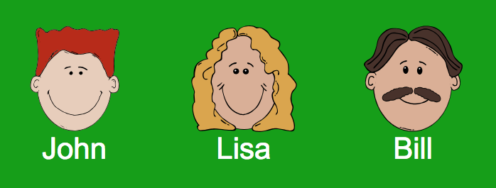
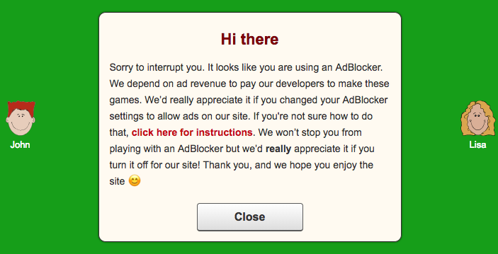
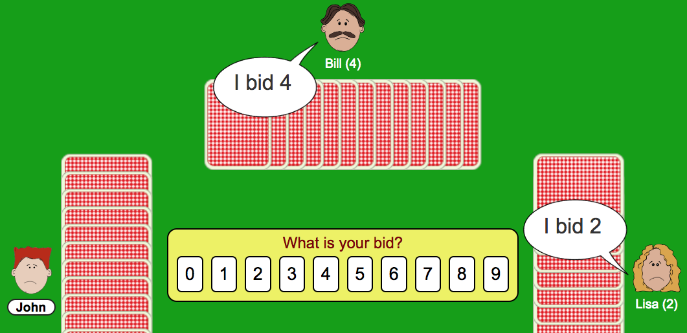
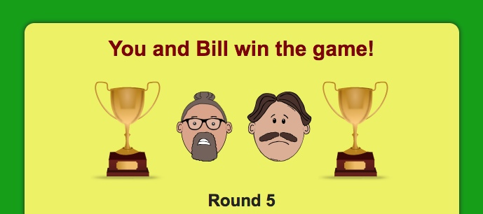
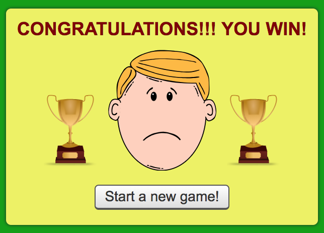

Getting people to turn off Ad Block with sad faces
Posted: Last updated:I was wondering recently if it would be possible to get users with Ad Blockers on CardGames.io to turn their blocker off for just our site. Ad blocking isn't a huge problem for us, but still, we would prefer that as many people as possible allowed ads, since ads are ultimately what keeps us in business. I didn't want to stop people completely from playing, but wanted to see how many of them would respond if we tried to get them to turn their blockers off.
First thing I thought of was just putting up a small notice, politely asking people to support us by turning off their ad blocker, but then I thought of doing something else as well. On the site you generally play against three computer players, Bill, John and Lisa. The players are happy while playing but get sad if they lose. People who play a lot on our site have very strong opinions about the computer players, they see all kinds of differences in them that aren't really there (all the players use the exact same code), get annoyed at some of them and like others.

So, I wrote the code for the ad-block detection and it worked like this:
- A player with ad block who arrives for the first time on the site is tagged as "detected". No notice is shown on first page load, I believe in letting people try the games first to see if they like them, no one wants to turn off an ad blocker for a site they've just arrived on for the first time.
- A player tagged as "detected" loads a page for the second time. We show a polite request asking them to please turn their ad blocker off for our site, including a link to a page with detailed instructions for how to do that. Half of the users get tagged as "warnedsad" and half get tagged as "warnedonly". 
- The players who are tagged "warnedsad" get sad faces on everyone during play, and a small notice below the board saying the players would be happier if the user turned their ad block on. The users tagged as "warnedonly" get a normal experience after seeing the request to turn off their ad blocker.  
- We log when a player tagged "warnedsad" or "warnedonly" turns off their ad blocker, and we log when a player who has turned off their ad blocker turns it on again.
I left that code running for a few days. Here are the results:
- ~30% of people who saw the notice turned off their ad blocker.
- Of the people who turned it off, 90% turned it back on!
- No meaningful difference in warning only vs. warning + sad faces!
So in the end we managed to get slightly less than 3% of our ad blocking users to turn off their blocker permanently. Most surprisingly to me, the sad faces made no difference at all, vs. just the warning. Basically, people who were willing to try turning their blocker off were willing after seeing the notice, and didn't need the extra push of sad players.
We saw no increase in revenue, but we did definitely see a big increase in emails and Facebook messages! Some people were furious that we dared to make their experience on the site worse than that of non-adblocking users. We were accused of "blackmail" and "emotional battery". But we also got several emails from older people who play the games daily and were now confused and sad about the sad faces, and couldn't figure out how to turn off ad blocking, which had been set up for them by relatives. So while I thought showing sad faces to ad-blocking users was very funny initially, it quickly became clear that this was a terrible idea, which dramatically increased our support load and didn't increase our revenue at all.
Today I turned the entire feature off. No notice, no sad faces. Lesson learned: trying to force ad-blocking users to allow ads is not worth it at all! Quite a few people emailed and said they'd be happy to support the site in some other way, like with a PayPal donation or Patreon or something, but just couldn't stand ads. Maybe I'll do something like that in the future. For now we've stopped caring about ad blockers, and will let everyone play with no limitations. The title of this post should really be "Failing to get people to turn off ad-block with sad faces", but that doesn't sound as good 😀.
In the end the experiment was a complete failure, but hey, at least I've disproven my hypethesis that sad faces would get people to turn their blockers off. And I will never stop thinking it's funny that someone with an ad-blocker came to the site, played as well as they could and ended up with this:
